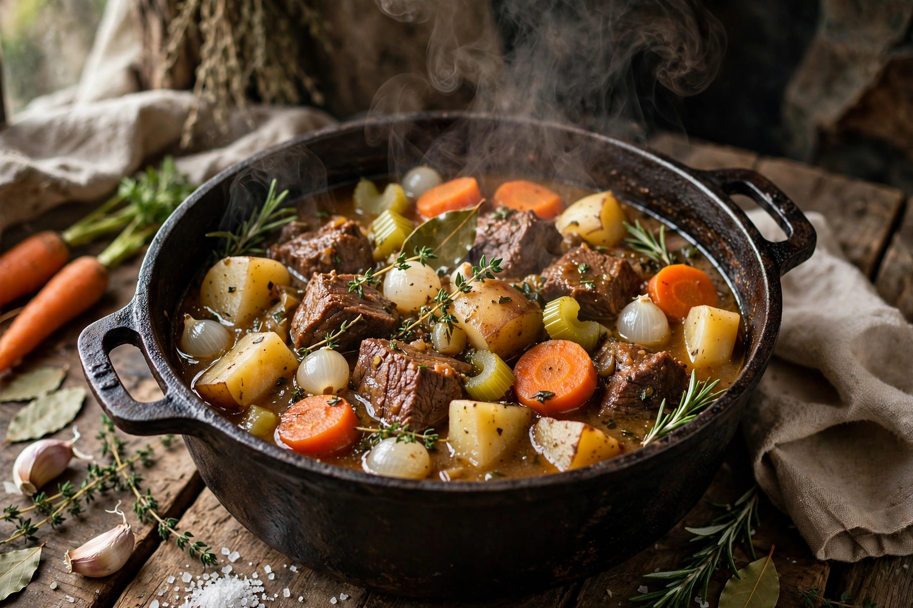

Stewing
From Wikipedia, the free encyclopedia

A stew is a combination of solid food ingredients cooked in liquid and served in the resulting gravy. Stews are made on every continent and from almost any ingredients: meat or seafood with vegetables, simmered slowly — often for hours — in a covered pot with stock, wine, beer or water. Unlike braising, in stewing the food is cut into smaller pieces and fully submerged in the cooking liquid, and unlike soup the liquid is a modest part of the finished dish, meant to coat rather than to be drunk.
Stewing is among the oldest cooking methods, possible as soon as waterproof, heatproof vessels existed; herders and hunters stewed tough cuts and old animals into tenderness long before ovens. Famous stews include Hungarian goulash, French boeuf bourguignon and bouillabaisse, Irish stew, Japanese nikujaga, Ethiopian wat, Indian curries and American chili con carne.
Method
Meat is often browned first for flavour (the Maillard reaction), then returned to the pot with aromatics and liquid and simmered gently — never boiled hard, which toughens meat — until tender. Vegetables are added in stages according to how long they take. Tough, collagen-rich cuts benefit most; the collagen melts into gelatin, giving the sauce body.
Thickening
Stews may be thickened with flour (as a roux or by dredging the meat), with starches such as potato or cornflour, with puréed vegetables, okra or ground nuts, or simply by reduction. Some, like goulash, rely on onions breaking down into the sauce.
History
The ancient Roman cookbook Apicius contains stew-like recipes; medieval pottages were stews kept perpetually simmering. The word "stew" in English comes from Old French estuver, to cook in a closed vessel. Stews remain the archetypal one-pot meal worldwide, associated with thrift, warmth and communal eating.